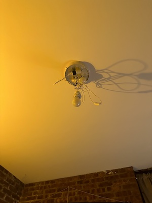

I have very strong feelings about lighting. I generally don't like overhead lights and absolutely loathe white flourescent lighting. I've always liked the idea of turning a knit hyperbolic plane into a lampshade. I never took to knitting so I started crocheting one. However, I can't figure out how to crochet a second row, so for now the lampshade is one long stitch.
My ceiling light and I patiently await a constantly negatively curved lampshade:
